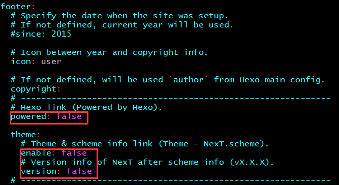
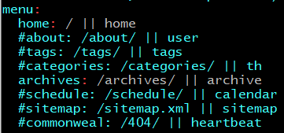
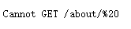
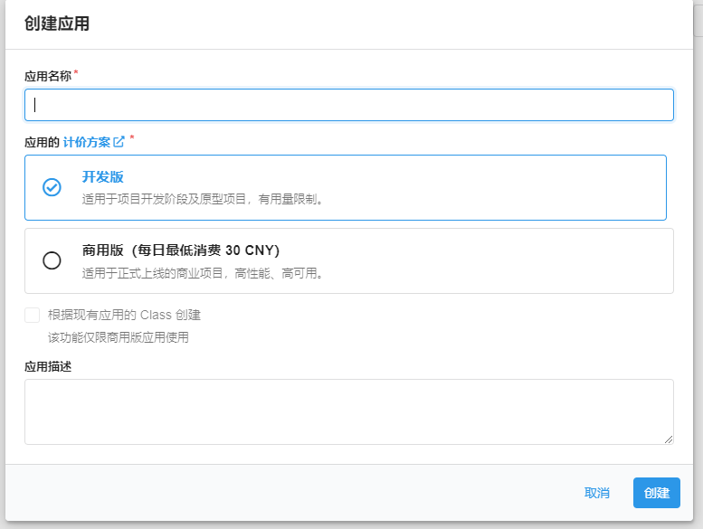
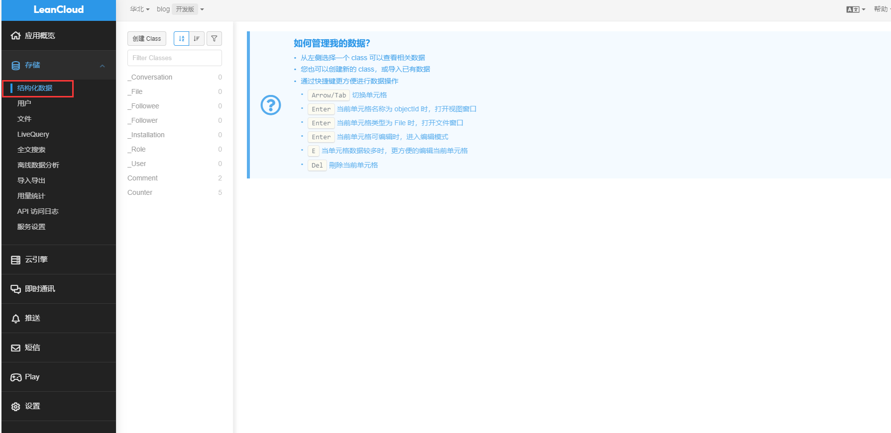
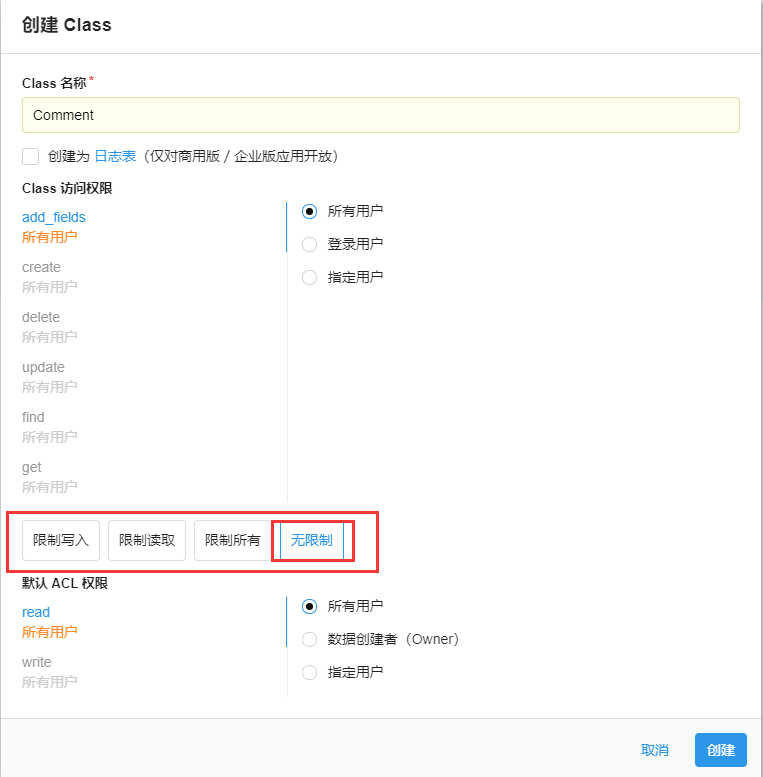
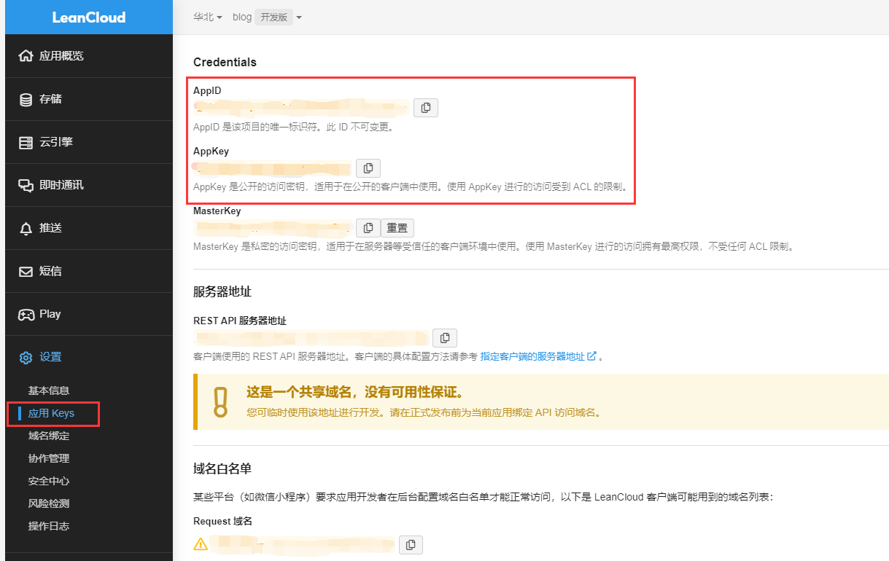
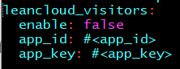
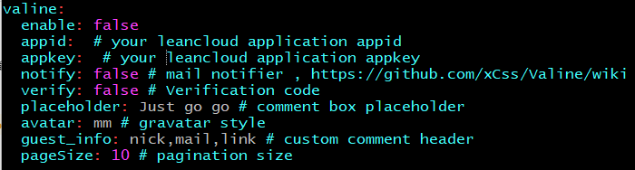

hexo博客的定制化
前文
如果你已经看过我之前写的几篇文章，相信已经对Hexo有了一定了解了，包括怎么安装新主题、配置、部署、发文等，实际上这样对大多数人已经足够了，但你可能不满足于默认的几个功能，比如你还想加入评论、阅读量统计，或者改一下页面布局，这都没问题。
两个配置文件
相信你已经发现了，hexo有两份配置文件同时生效，一是hexo全局配置文件即_config.yml，二是主题配置文件，比如我用的是next主题，那么它就是themes/next/_config.yml，定制化主要依靠这两个文件来进行，尤其是主题配置文件，大多数hexo主题其实已经高度集成了许多功能，比如next主题就集成了valine评论插件，可以直接通过主题配置文件打开。
按需阅读
接下来就说一下，目前我的博客是怎么配置的，你可以根据自己的需求自行食用。
修改语言和时区
在全局配置文件中，language配置项，简体中文是zh-Hans；时区是timezone，中国地区可以修改为Asia/Shanghai
去除页脚Powered和Theme
一般在主题配置文件中，找到footer配置项，其中包含powered配置项，修改为false，theme.enabled修改为false，theme.version修改为false。

修改页面布局
以next主题为例，一共有四种布局，Muse（默认）、Mist、Pisces（我在用的）、Gemini。
修改主题配置文件的scheme项，修改为你想要的布局，比如修改为Pisces，即scheme: Pisces
添加菜单选项
next主题默认只有home和archive两个选项，如何添加作者、标签、分类这样的页面呢。

如上图所示，修改menu项，将tags、about、categories前面的井号去掉。
如此一来，博客菜单栏会展示出这些按钮，但你点击这些按钮时，会发现超链接是无效的，大概率会出现这样的一串玩意。

实际上是因为menu项里url配置不对导致的，你可以仔细看看上面的menu配置项，是不是发现所有路径中间都有一对||符号，实际上，符号左边是菜单项的url，右边是菜单项的图标，next主题的菜单用的是font-awesome图标，你可以参考font-awesome的图标名称随意更改，这里不展开说。这一对||符号左边右边都有一个空格，把这两个空格去掉，即可使菜单url恢复正常。
修改完url后再打开发现菜单url还是打不开，这是因为hexo默认就是不包含这些页面的，你需要自己生成。
执行下面的代码。hexo new page "about"hexo new page "categories"hexo new page "tags"
随后修改source/about/index.md即可，它是完全遵守markdown语法的，categories和tags则不需要修改。
作者头像
将你想要设置的头像图片放到source/uploads（自建目录）里，重命名为avatar.png。
修改主题配置文件中avatar项，比如这样avatar: /uploads/avatar.png。
注：如果你项用URI的形式也是可以的，不一定非要用本地图片。
开启评论和阅读量功能
在开启这两个功能之前，需要你注册一个LeanCloud的账号（免费注册，不需要充值），这里注册步骤不展开说了，详细说说LeanCloud需要做些什么。
首先创建应用，这里应用名称和应用描述随便选一下就可以了，方案选开发版即可，不收费。

随后进入应用管理界面，选择存储->结构化数据，其中以下划线开头的这些Class是默认自带的，不用管他们。

我们创建一下两个Class，一个叫Comment一个叫Counter，注意访问权限需要选择无限制。

此时，你可以去应用的设置界面找一下两个关键的东西，即AppId和AppKey，后续会需要这两个字符串。

编辑主题配置文件，找到leancloud_visitors项，enabled改为true，app_id和app_key修改为自己的就可以了，这是阅读量统计。

找到valine项，这是评论功能，enabled改为true，appid和appkey改成自己的，placeholder是评论未输入时的默认占位符，guest_info是评论者需要输入的信息，默认nick、mail、link代表昵称、邮箱地址、个人站点，可以按照你自己的需要删减。

后文
以上内容都只是hexo和next配置的一小部分，我只是单纯把一些比较直观的地方捡出来说了，其他配置项你也可以自行探索，可以参考hexo官方文档也可以参考next官方文档，我都在参考文章那部分列出来了。到此为止，hexo博客系列的文章就告一段落了，如果今后我有发现有什么有趣的东西，也许会再更新，大家对这几篇文章有什么建议都可以在评论区告诉我。
参考文章
github.com/iissnan/hexo-theme-next/wiki
NexT主题官方起步指南
解决Hexo博客导航栏链接URL乱码问题
为NexT主题添加文章阅读量统计功能